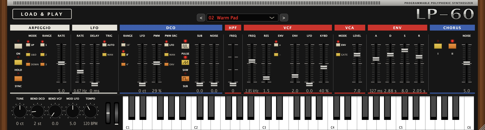

LP-60
Six voix, un chorus, et toute une décennie.
Six voices, one chorus, a whole decade.
Synthé polyphonique inspiré du Juno-60, calé à l'oreille et à la mesure sur un vrai Roland JU-06A, souffle du chorus compris.
A polysynth inspired by the Juno-60, tuned by ear and by measurement against a real Roland JU-06A, chorus hiss included.